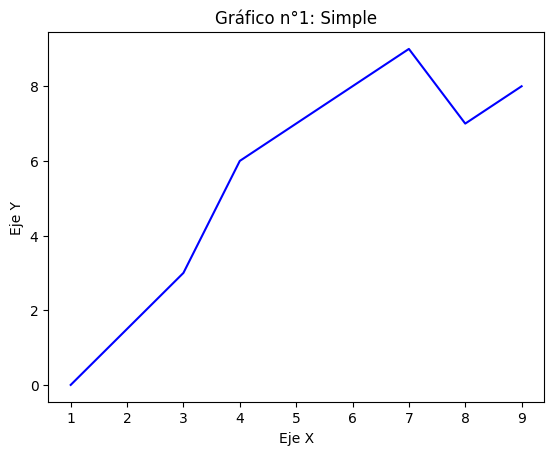
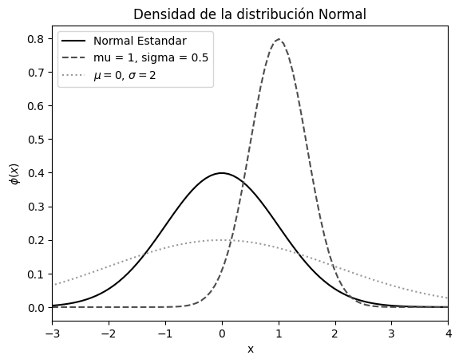

print("hello Ecomat, que bueno es estar aquí")hello Ecomat, que bueno es estar aquíEsta guía intenta mostrar a los estudiantes de la Maestría en Economía los primeros elementos del desarrollo de Python para el análisis matemático
print("hello Ecomat, que bueno es estar aquí")hello Ecomat, que bueno es estar aquíA continuación veremos la clasificación o tipos de datos que comunmente utilizamos en un lenguaje de programación como este
type("Quien quiere ver economía matemática")strNotamos que nos da el indicador de (str), que hace referencia a string. Un proceso que nos dice que estamos hablando de caracteres especiales o letras. A continuación vamos a mirar algunos ejemplos adicionales:
type(5)inttype(3.1898)floattype((3,1))tupletype(["Bollo", "Yuca", "Butifarra"])listtype(True)booltype({"Color": "Verde", "Fruta": "Manzana", "Nombre": "Carlos"})dictLos tipos de datos entonces los encuentra aquí: ¡Claro! Aquí tienes una tabla en Markdown con algunos de los tipos de datos más comunes en Python:
| Tipo de Dato | Descripción | Ejemplo |
|---|---|---|
int |
Números enteros | 42, -7, 0 |
float |
Números de punto flotante | 3.14, -2.0, 0.5 |
bool |
Valores booleanos | True, False |
str |
Cadenas de texto | "Hola", "Python" |
list |
Listas (colecciones ordenadas) | [1, 2, 3], ["a", "b"] |
tuple |
Tuplas (colecciones ordenadas e inmutables) | (1, 2), ("a", "b") |
dict |
Diccionarios (pares clave-valor) | {"clave": "valor"}, {"a": 1, "b": 2} |
set |
Conjuntos (colecciones desordenadas de elementos únicos) | {1, 2, 3}, {"a", "b"} |
Adicionalmente podemos crear listas de objetos para tener un estamento de Macrodato o dato estructurado. Esto es:
x = ['Economía Matemática', 9, 4.2, False]type(x)listx = ["Naturales", "Sociales", "Matemática"]x.append("Educación Física")x['Naturales', 'Sociales', 'Matemática', 'Educación Física']Las listas de elementos pueden ser ordenados de cierta manera.
x.sort()
x['Educación Física', 'Matemática', 'Naturales', 'Sociales']x.sort(reverse=True)
x['Sociales', 'Naturales', 'Matemática', 'Educación Física']Realice las siguientes operaciones en Python: * 2 + 4 * 2 x 5 * 10 / 2 * 10 - 7 * ¿Cuántas veces cabe el 3 en el 10? * ¿Cuánto sobra después de dividir 10 entre 3?
resultado_1=2+4
print(resultado_1)
print(2*5)
print(10/2)
print(10//3)
print(10/3)6
10
5.0
3
3.3333333333333335Existe una gran variedad de Paquetes o grupo de funciones que permiten realizar gráficos en Python. Un ejemplo de ello es:
import matplotlib.pyplot as plt
# Crear datos
x = [1, 3, 4, 7, 8, 9]
y = [0, 3, 6, 9, 7, 8]
# Graficar
plt.plot(x, y, color='blue')
plt.xlabel('Eje X')
plt.ylabel('Eje Y')
plt.title('Gráfico n°1: Simple')
plt.show()
Un gráfico con mas condiciones:
import scipy.stats as stats
import numpy as np
import matplotlib.pyplot as plt
# Ingredientes
x = np.linspace(-4, 4, num=100)
# Evaluación de densidad
y1 = stats.norm.pdf(x, 0, 1)
y2 = stats.norm.pdf(x, 1, 0.5)
y3 = stats.norm.pdf(x, 0, 2)
# Gráfico:
plt.plot(x, y1, linestyle='-', color='black', label='Normal Estandar')
plt.plot(x, y2, linestyle='--', color='0.3', label='mu = 1, sigma = 0.5')
plt.plot(x, y3, linestyle=':', color='0.6', label='$\\mu = 0$, $\\sigma = 2$')
plt.xlim(-3, 4)
plt.title('Densidad de la distribución Normal')
plt.ylabel('$\\phi(x)$')
plt.xlabel('x')
plt.legend()
plt.show()
Primero hablemos de la regla de derivadas que tenemos. En Economía es mas útil pensar que existen o hay usos en las médidas de los cambios de una variable sobre otra \(\frac{\Delta Y}{\Delta X}\) y esto no es mas que ver la forma o manera que responde \(Y\), cuando \(X\) cambia.
pip install sympyRequirement already satisfied: sympy in /Library/Frameworks/Python.framework/Versions/3.10/lib/python3.10/site-packages (1.13.3)
Requirement already satisfied: mpmath<1.4,>=1.1.0 in /Library/Frameworks/Python.framework/Versions/3.10/lib/python3.10/site-packages (from sympy) (1.3.0)
WARNING: You are using pip version 22.0.4; however, version 25.0.1 is available.
You should consider upgrading via the '/usr/local/bin/python3.10 -m pip install --upgrade pip' command.
Note: you may need to restart the kernel to use updated packages.import sympy as sp
# Primer paso va en definir la variable y la función
x = sp.symbols('x')
funcion = sp.sin(x) * sp.exp(x)
# Como se calcula la derivada
derivada = sp.diff(funcion, x)
print(derivada)exp(x)*sin(x) + exp(x)*cos(x)Digamos que queremos hallar la derivada de una función: \(\pi_i=1000 \cdot q - 5q^{2}\)
q = sp.symbols('q')
funcion = 1000*q - 5*q**2
# Derivamos
derivada = sp.diff(funcion, q)
print(f"La derivada de la funcion es {derivada}")La derivada de la funcion es 1000 - 10*qq = sp.symbols('q')
# Definir una función h(q)
h = sp.ln(q**3 + 2)
# Calculamos la derivada de la función h(q) con respecto a q
derivada_h = sp.diff(h, q)
# Mostrar el resultado
derivada_h\(\displaystyle \frac{3 q^{2}}{q^{3} + 2}\)
Halle ahora para las siguientes funcionces la derivada:
Las matrices son herramientas fundamentales en el campo de las matemáticas y la ingeniería, especialmente en la resolución de problemas de optimización. Una matriz es una estructura bidimensional que organiza datos en filas y columnas, permitiendo realizar operaciones algebraicas de manera eficiente. En problemas de optimización, las matrices se utilizan para representar sistemas de ecuaciones lineales, modelar relaciones entre variables y manejar grandes conjuntos de datos.
\[M=\begin{pmatrix} x_{11} & x_{12} & x_{13} \\ x_{21} & x_{22} & x_{23} \\ x_{31} & x_{32} & x_{33} \end{pmatrix}\]
import numpy as np
# Ejemplo 1: Suma de dos matrices 2x2
A = np.array([[1, 2], [3, 4]])
B = np.array([[5, 6], [7, 8]])
C = A + B
print("Ejemplo 1: Suma de matrices 2x2")
print(C)Ejemplo 1: Suma de matrices 2x2
[[ 6 8]
[10 12]]# Ejemplo 2: Producto de dos matrices 2x2
A = np.array([[1, 2], [3, 4]])
B = np.array([[5, 6], [7, 8]])
C = np.dot(A, B)
print("Ejemplo 1: Producto de matrices 2x2")
print(C)Ejemplo 1: Producto de matrices 2x2
[[19 22]
[43 50]]